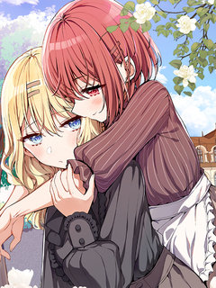
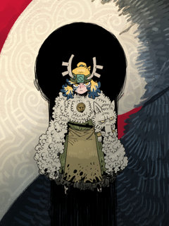
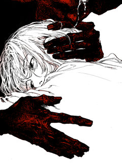
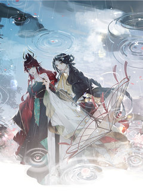
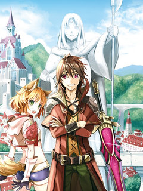
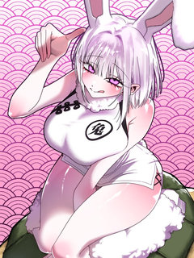
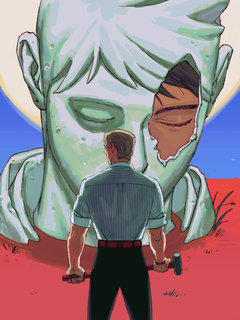
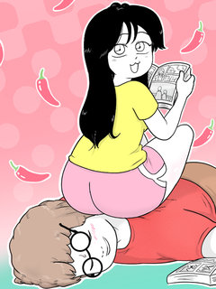
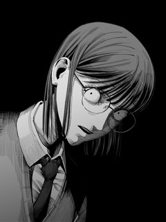
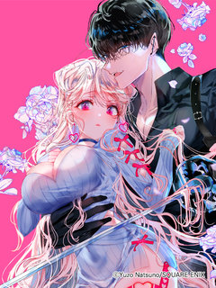

레진코믹스 추천 인기 순위 TOP 30
레진코믹스에서 지금 연재 중인 작품을 레진코믹스 공식 인기 순위 순서로 모았어요. 네이버웹툰·카카오웹툰·레진코믹스에서 조건에 맞는 작품 446개 중 인기 순으로 30개를 골랐어요. 인기 TOP 3: 남고 소년, 게임은 살인이다, 오류탐구영역
2026-09-29 기준 · 성인 작품 제외
내 취향으로 더 좁혀서 추천받기 →-
1
 레진코믹스
레진코믹스남고 소년
대문 남고의 유일한 홍일점인 '홍일탁'. 물론 이름과 별명과는 다르게 남자다. 왜소한 체격과 곱상한 외모 덕분에 찐따부터 일진에 이르기까지 자신을 무시하기에 이르고 교내 서열 꼴찌에 머무르고 있었다. 과거, 중학교 2학년까지만 해도 유명한 일진이었던 일탁은 자신의 한 문제로 인해 먹이…
BL개그성장물숏드라마스낵타임레진코믹스에서 보기 → -
2
 레진코믹스
레진코믹스게임은 살인이다
정체불명의 가상현실 게임 '케이지' 자신과 인연이 있던 스승이자 어린아이인 <요를>을 GM인 유타기의 손에 잃고나서 유타기를 진심으로 죽이기 위한 방법을 찾기 위해 강해질 방법을 찾게 되는데... <내게 게임은 살인이다>의 정식 후속작.
게임소년물SF성장물판타지레진코믹스에서 보기 → -
3
 레진코믹스
레진코믹스오류탐구영역
중학생 때까지 전교 1등을 놓쳐본 적 없는 '오승표'는 고등학교 진학 후 '류재민'에게 전교 1등 자리를 뺏기고 만다. 전교 1등은 류재민, 전교 2등은 오승표. 아무리 열심히 공부해도 이 순서를 뒤집을 수가 없다. 태어나 처음으로 느끼는 열등감에 승표는 저도 모르게 재민을 계속 지켜…
학원물혐관배틀연애BL레진코믹스에서 보기 → -
4
 레진코믹스
레진코믹스사랑은 환상! ~슈퍼스타~
혜성과 도진의 아들인 '박별' 은 예전에는 아이돌 연습생이었으나 현재는 그만두고 평범한 고등학교 생활을 보내고 있다. 갑작스럽게 동생이 생겨 혼란스러운 와중에, 별은 한동안 소원해졌던 소꿉친구 '시우'가 자꾸만 눈에 밟히게 되는데.. 꿈과 우정(?)을 찾는 별이의 반짝반짝 하이틴 성장…
월드드랍WorldDrop학원물성장물능력수레진코믹스에서 보기 → -
5
![몸캠 BJ의 이중생활 [연재] 표지](../../thumbs/lezhin/7011776929129080.jpg) 레진코믹스
레진코믹스몸캠 BJ의 이중생활 [연재]
본부장님, 아니 Daylightx씨, 전 당신의 비밀을 전부 알고 있어요- 밤에는 백만 팔로워를 가진 벗방 스트리머 Daylightx로, 낮에는 평범한 회사원 임성현으로 이중생활을 하던 도중, 누군가 내 정체를 알아챘다.
능력공까칠수오해/착각능력수현대물레진코믹스에서 보기 → -
6

레진코믹스괴롭혀주세요 악역 아가씨
나 엘로이즈, 미연시 게임 속 영애로 빙의했다. 여주를 괴롭히고, 연애 루트를 방해하는 전형적인 악역 아가씨가 되어야 하는데… 뭔가 묘하다. 여주인공 아샤가… 좀 많이 이상해! “엘로이즈~ 오늘은 나를 어떻게 괴롭힐 거야~?” 괴롭히기도 전에 들이대는 여주인공이라니, 이게 맞나? 계획…
빙의로맨틱코미디GL레진코믹스에서 보기 → -
7

-
8

-
9
 레진코믹스
레진코믹스킬러가 사랑에 빠졌을 때
[속보] 프로 킬러 주태만이 국내 최고의 배우 강다혁에게 반해버렸다! 극강의 훈련과 교육 그리고 잔인한 고문도 견뎌낸 프로 킬러 주태만, 그러나 어째서인지 강다혁의 다정함에는 손쉽게 무너지는데...? ㅡ 프로킬러 NN년차, 설마 이게 바로 사랑? 그러면 이럴 때는 어떻게 해야 하지?
직진수헌신수능력수얼빠수미남공레진코믹스에서 보기 → -
10
![원룸 조교님 [개정판] 표지](../../thumbs/lezhin/7011781499120795.jpg) 레진코믹스
레진코믹스원룸 조교님 [개정판]
2학년으로 복학한 우윤은 묘한 매력의 행정실 조교님 진형을 만나고, 냅다 고백한 결과 원룸에서 동거를 시작한다! 동거 일주일이 되던 날, 우윤의 농도 깊은 키스에 스킨십에 대한 남다른 환상이 있다며 기다려 달라는 진형. 대체 그 환상이 뭔데!? 그들은 모든 환상과 망상을 딛고 무사히…
미남수연상수미인공동거캠퍼스레진코믹스에서 보기 → -
11
![레가스 [연재] 표지](../../thumbs/lezhin/4926773083701248.jpg)
-
12

레진코믹스얽힌 가지 [연재]
스물여섯, 병으로 이른 죽음을 맞은 강채연. 다시 눈을 떠보니 곧 멸망할 나라의 황후로 빙의했다! 이번에는 일찍 죽지 않고 살아남기 위해, 나라의 파멸을 막기 위해— 훗날 나라를 핏빛으로 물들이고 끝내 자신까지 죽일 대악역 공주를 교화시켜 바르게 키워야 한다. 공주의 올케로 빙의한 강…
궁중로맨스동양시대물GL레진코믹스에서 보기 → -
13

-
14
![그 남자가 대신 시집간 사정 [연재] 표지](../../thumbs/lezhin/5254360371363840.jpg) 레진코믹스
레진코믹스그 남자가 대신 시집간 사정 [연재]
진북왕 군현효는 심지부 딸이 미인이라는 소문을 듣고 첩으로 들이라 명한다. 진북왕의 잔인한 소문을 두려워한 심지부는 벙어리 노비 심옥을 여장시켜 대신 시집을 보낸다. 절세미인인 심옥에게 진북왕이 빠져들어 집착하자, 이를 질투한 왕비는 다양한 계략으로 심옥을 이간질하며 괴롭힌다. 자신을…
냉혈공후회남미인공순진수동양레진코믹스에서 보기 → -
15

레진코믹스여기는 내게 맡기고 먼저 가라고 말한 지 10년이 지났더니 전설이 되어 있었다.
최강 마도사 랙의 파티는 마신왕을 쓰러트리기 위해 격렬한 전투를 벌였다. 그리고 적의 추격을 받던 중에 랙이 동료에게 외쳤다. \\
인외존재단행본판타지레진코믹스에서 보기 → -
16

-
17

레진코믹스거북이는 잠자는 토끼를 지나칠 수 없어!
거북이는 토끼와의 달리기 시합에서 승리하고, 10년을 숨겼던 마음을 고백하기로 결심한다! 거북이는 최선을 다해 달리지만 다가올 미래는 참혹 그 자체?!
개그드라마병맛판타지레진코믹스에서 보기 → -
18

레진코믹스불멸의 날들
오랜 연구 끝에 인류는 더이상 죽지도 다치지도 않게 된다. 하지만 언제나 돌연변이는 존재하는 법. 죽을 수 있는 존재로 태어난 '멸'은 불사의 사람들 사이에서 갖은 고생을 하며 살아간다. 외로이 고군분투를 하며 지내던 때, 멸은 자신과 같은 돌연변이 해결사 '필'을 만나게 된다. 그리…
액션레진코믹스에서 보기 → -
19

-
20
![신복(臣僕) [연재] 표지](../../thumbs/lezhin/7011776242107669.jpg) 레진코믹스
레진코믹스신복(臣僕) [연재]
황제가 중병에 걸렸으나, 슬하에 자식이 없어 황족 중 가장 기초가 없는 아이를 태자로 세웠다. 이에 10살 서승재는 태자가 됐고, 안기연은 태부가 되어, 태자에게 나라와 백성을 다스리는 법을 가르쳤다. 서승재는 점점 안기연에게 의존하게 되었고, 의존하던 마음은 변질되어 자신을 돌봐주던…
미인수궁중로맨스짝사랑연하남BL레진코믹스에서 보기 → -
21
![저렴한 남자 [연재] 표지](../../thumbs/lezhin/7011780897237891.jpg) 레진코믹스
레진코믹스저렴한 남자 [연재]
한성준을 자신과 아버지를 찾으러 온 자신의 형 임연에게 접근한다. 그는 집착이 강한 성격으로 임연을 자기것으로 만들기 위해 그를 자신의 침대로 데려간다. 남들이 보기에는 전형적인 나쁜남자 처럼 보이는 한성준이지만 임연에게는 이상할 정도로 순애보를 보이고, 나약하고 가여운 외모의 임연은…
신분차이오해/착각미남공상처수현대물레진코믹스에서 보기 → -
22
![소꿉친구의 가이드가 되었다 [연재] 표지](../../thumbs/lezhin/7011745902996743.jpg) 레진코믹스
레진코믹스소꿉친구의 가이드가 되었다 [연재]
하룻밤으로 D급 가이드에서 S급 가이드가 되었다. 만년 D급 가이드 조이현. 쌍둥이 소꿉친구들이자 A급 에스퍼인 정한세와 정한결의 그늘에 가려져 살다가 단 하룻밤으로 S급 가이드가 되다?!
순진수연하남능력수가이드버스대형견남레진코믹스에서 보기 → -
23
 레진코믹스
레진코믹스지상낙원의 부적응자
플로리다에 머무른지 3년째인데도 영어를 못 하는 괴짜 이탈리안 살보 비갈리. 그는 세계적인 작가임에도 호텔 대신 플로리다의 낡은 모텔에서 누군가를 기다리며 말라가고 있다. 고향 시칠리를 그리워하던 살보는 순전히 고향의 억양을 쓴단 이유로 처음 만난 건달 청소부 벤을 자신의 조수 겸 영…
까칠수혐관연상수성장물연하남레진코믹스에서 보기 → -
24
![석류를 삼킨 뱀 [개정판][연재] 표지](../../thumbs/lezhin/7011767074341653.jpg) 레진코믹스
레진코믹스석류를 삼킨 뱀 [개정판][연재]
대륙에서 가장 부유하고 광활한 땅 ‘트라스타사’는 전능한 신 아몬과 그의 반려 나인이 다스린다. 완벽한 낙원처럼 보이는 아름답고 화려한 신전과, 나인에겐 한없이 다정한 불로불사의 신 아몬. 하지만… \\
다정수상처수미남공인외존재대형견남레진코믹스에서 보기 → -
25
 레진코믹스
레진코믹스안녕, 나의 폐하
*15세 이상 이용가능 *본 작품은 픽션이며 등장하는 인물, 사건, 지명 등은 실존하는 것과 일체 관계가 없습니다. 고대 이집트에 관심이 많은 의대생 장이현. 그는 유적을 보기 위해 이집트로 답사를 떠났다가 넓은 유적에서 길을 잃고 도굴꾼들과 맞닥뜨리게 된다. 이현은 그들에게 붙잡혀…
강공회귀궁중로맨스능력수BL레진코믹스에서 보기 → -
26

-
27
![남보다 못한 사이 [개정판] 표지](../../thumbs/lezhin/7011744182538244.jpg) 레진코믹스
레진코믹스남보다 못한 사이 [개정판]
해당 작품은 웹툰 <남보다 못한 사이> 성인 버전의 일부 장면을 수정한 [개정판]입니다.이용에 참고 부탁드립니다. \\
떡대수미남수미인공소꿉친구친구>연인레진코믹스에서 보기 → -
28

-
29레진코믹스
설마 내가 낳은 건 아니겠지? [연재]
[페로몬조차 돈 냄새로 진동하는 능구렁이 알파 X 도도하고 까칠하지만 돈만 밝히는 금사초(禁蛇草) 오메가] 눈 떠보니 이불 속에 뱀 알이 나타났다, 설마… 내가 낳은 건 아니겠지?!
떡대공귀염수오메가버스인외존재오피스레진코믹스에서 보기 → -
30

레진코믹스어쌔신&신데렐라
“당신을 응석부리게 하고 죽여버릴 만큼 사랑하고 싶어. 결혼하자.” 스파이 활동을 지속하기 위해 계약 결혼을 받아들이지만 살기와 색기가 감도는 남자의 몸에 안겨 네네코의 마음은 점차 풀려가는데···? 어쌔신의 사랑에 감싸여 처음 하는 동거, 그리고 첫날밤을 맞이하고···—. 라이벌 조…
직진남계약연애절륜남결혼생활로맨스레진코믹스에서 보기 →